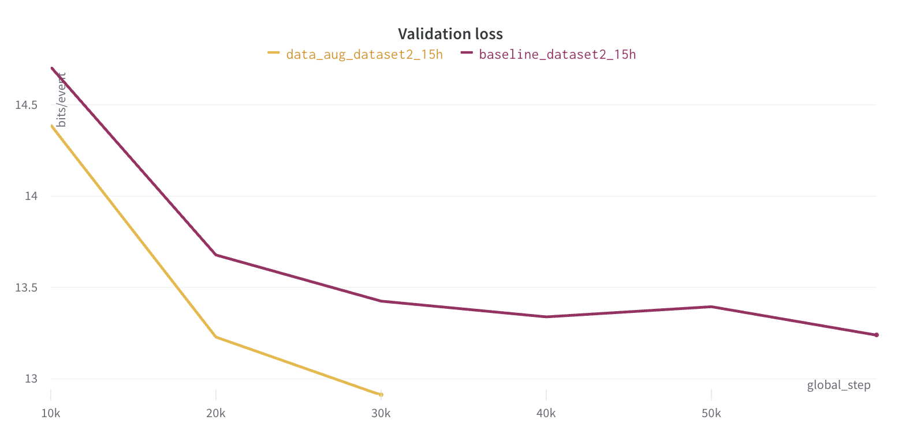

Generating music from Raw MIDI
Aug 2023 ~ Vrije University Amsterdam
Length: 11 mo
Programming language: Python (NumPy, Random, Math, PyYAML, PyTorch, PyTorch Lightning, W&B,
TensorBoard, Python Fire)
Data: Raw MIDI representations composed of the following features: type (7 event
types), note (128 notes), velocity (128 velocity levels), channel (16 MIDI channels),
instrument (128 MIDI instruments), and tick (note on and off).
Problem description:
Develop and train GPT-like transformers on HPC to generate music from Raw MIDI
Approach & Results:
Starting from the decoder-only skeleton architecture displayed below, several structural
adjustments were implemented, one by one, and evaluated after training the respective transformers
on HPC and comparing their losses in W&B. The list of conducted experiments includes weight scaling,
T-Fixup initialization,
Stochastic Weight Averaging (SWA),
Scalenorm and Fixnorm.
Additionally, the model was developed to enable multi-node training and resume learning from checkpoints.
Lastly, its embedding dimension, batch throughput, learning rate, and dropout rate were optimized, and the
installation and utilization instructions were drafted.
The performance of the transformers was quantified using the amount of information a model
can compress per bit, measured in bits per event (the lower, the better). Regarding the
enhancements incorporated, one that produced remarkable results is mixed precision.
In the image below, one can see the validation losses of two models, out of which one uses mixed precision.
Even though both transformers were trained for 120 hours, the one with mixed precision was three times faster
without affecting the loss.
The next successful experiment involved adjusting the embedding initialization to PyTorch's
default function, nn.Embedding(). Consequently, the validation curve was improved by 2%, as
displayed in the next chart.
In order to reduce overfitting, various data augmentation techniques were applied, resulting
in another significant decrease in the validation curve, as the figure below suggests.

Finally, the best model was used to generate the following samples. These are composed
starting with a seed extracted from an existing song, followed by a whistle, which marks the beginning of
the music generated by the model. Accordingly, one can notice that the transformer can reliably
produce chords and learn the timing from the seed.